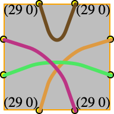
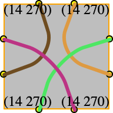

Tsuro
Overview Tsuro is a board game for three to five players.
The game board is a 10 x 10 grid of square holes into which players can place tiles. We use index for natural numbers in [0,10). The origin of the board is the top-left corner, its top-most border is the x-axis, and its left-most border is the y-axis.
Each tile is a square with 8 ports, 2 per side. The four sides are called north, east, south, and west. Each tile specifies four distinct connections between two distinct ports; every port must have exactly one connection. Here are some examples:




(The colors of the lines do not correspond between the top and bottom row.)
During a game of Tsuro, a player may rotate a tile by 90, 180, or 270 degrees before placing it on the board. Two tiles are equivalent if they are equal or one can be transformed into the other via a rotation. The second row in the above table shows what a 270-degree rotation of the corresponding tile above looks like.
A player avatar is a colored token (white, black, red, green, blue) that represents a player on a port of one of the placed tiles. We call such a tile and port occupied.
2 The Goal of the Game
The goal of a round of Tsuro is to be the player with the last avatar on the game board.
3 Starting the Game
The board is initially empty.
Starting with the oldest player, each player receives three tiles, chooses one, rotates it as needed, places it on the board bordering the periphery on at least one side, and adds an avatar to a port that faces an empty board square.
The initial placement continues with the next-oldest player until the youngest one has placed an initial tile and avatar. Whenever it is a player’s turn to place a tile and an avatar, it is informed of the current state of the game board.
This start-up round ends when all players have places their one tile and their avatar on the board.
4 Playing One Round
Starting with the oldest one and continuing in decreasing age, each player takes a turn to complete one round.
At the beginning of a turn, a player receives two tiles from the game
referee. The player chooses one of the two given tiles and places
it—
they get to a port on a tile that borders an empty square; or
they reach the periphery of the game board, in which case they—
and their owners— are eliminated from the game.
The round ends when every player has completed a turn.
5 Ending a Game
there is only one avatar left on the board; the avatar’s owner is the winner;
all remaining avatars reach the board’s periphery during the same round; the owners of these avatars are joint winners.